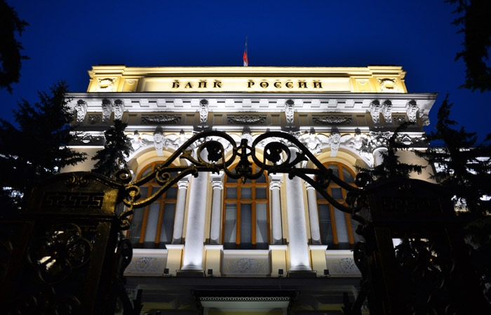

Регистрация в телеграм-боте: @Mavrodi_robot

В своих публикациях на блоге я неоднократно предсказывал скорый крах рубля и пр. Причём не далее, чем к апрелю. (См., к примеру, Предупреждение!!!) Между тем, апрель на носу, а рубль не только не рушится, но и наоборот, крепчает (как маразм! :-))), растёт как на дрожжах. И это на фоне всеобщего кризиса, спада ВВП и т.д. и т.п. Причём у нас больше, чем где бы то ни было (сами можете новости погуглить от тех чисел и убедиться). Что сей сон значит?
Анекдот есть такой. Про гусаров и попа. Играет поп в карты с гусарами и остаётся без четырёх. Поп смотрит, ничего не понимая, в карты и затем произносит с изумлением: «Как же так, господа? У меня же было шесть козырей!» − «Расклад, батенька!» Рынок, батенька! :-)))
Ладно, а теперь серьёзно. Есть такая болезнь. Подагра. Повышенное содержание мочевой кислоты в крови. Причина − неправильная работа почек. Следствие − отложение солей мочевой кислоты в суставах. В принципе везде может откладываться, но обычно в пальцах рук или ног. Палец вдруг распухает и начинает болеть. Причём боли при приступе чрезвычайно сильные и острые.
Вот у вас приступ. Вы вызываете врача. Он осматривает вас и говорит: «Вылечим!» И начинает колоть в палец какое-то сильное обезболивающее, скажем, морфий. Палец действительно болеть перестаёт. Иное дело, что почки и печень летят к чертям, да и другие все пальцы болеть через некоторое начинают (ведь лечить-то почки надо, а не палец! палец − только следствие), но именно этот − проходит. Вы, естественно, начинаете жаловаться врачу: «Как же так? У меня теперь и то, и то, и то ещё!.. После этого вашего “лечения”!» А он вам отвечает резонно: «Я вам что обещал вылечить? Палец? Я вам его и вылечил. А уж всё остальное − извините! Про это речи не было».

Вот именно это происходит сейчас у нас. Как государство (ЦБ) лечит палец? Держит доллар? Да очень просто. Ограничивает рублёвую ликвидность. Рубли банкам не даёт. Чтобы валюту им покупать было не на что. В итоге палец проходит. Доллар не растёт. Но вся экономика, весь организм, идёт вразнос. Предприятия не кредитуются, производство останавливается, банки разоряются. Всё умирает. Но рубль − стоит! Насмерть! Как и обещалось. Гарантировалось даже! Нашими дорогими властями. «А уж про остальное речи не было!»
Вас уволили вчера? Благодарите наш родной ЦБ! Если бы не эти его умелые действия, не это его «лечение», безработных у нас сейчас было бы не 6 млн. (и это ещё, заметьте, ОФИЦИАЛЬНЫЕ данные!), а, может быть, всего только 3. Или 2. Или… В общем, чего гадать. Это как раз тот самый случай, когда лекарство хуже болезни. Почитайте, кстати, здесь на эту тему.
Короче говоря. Власти воспользовались шумихой вокруг доллара и тем, что курс его стал рассматриваться населением как чуть ли не единственный показатель здоровья нашей экономики. И стабилизировали этот курс. «Вылечили» палец. (Про цену я писал выше.) «Видите! Мы же обещали! Всё под контролем! В стране всё нормально!» Показуха, как всегда. Потёмкинские деревни.
На самом деле, единственный РЕАЛЬНЫЙ показатель − уровень жизни населения. Доходы и цены. Всё остальное − от лукавого.
Почему цены растут, если всё отлично? Почему предприятия закрываются и людей увольняют? Почему?.. Почему?.. Почему?.. ПОЧЕМУ? КАК ЖЕ ТАК, ГОСПОДА?! Рынок, батенька!
Сергей Мавроди, 17 марта 2009 года
Регистрация в телеграм-боте: @Mavrodi_robot